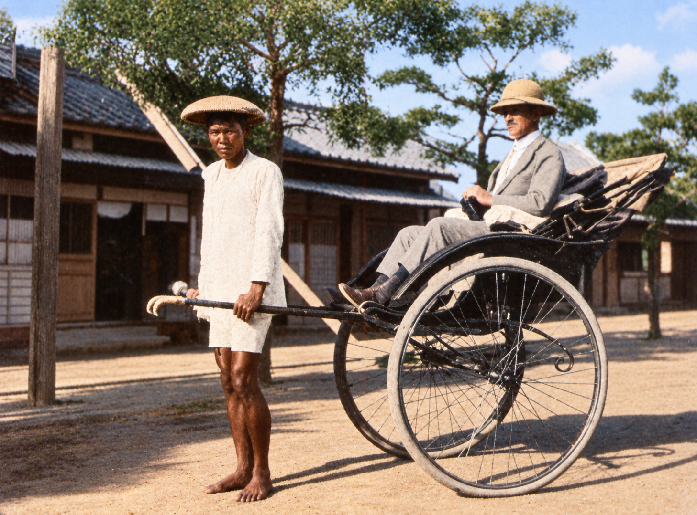

一張照片，一段城市記憶
人力車
AR 印章明信片

按下開始，將鏡頭對準這張照片。
人力車會出現在照片上，拉車人邁步前進，車輪轉動，乘客坐在車上。
辨識後，雙指張合縮放，單指拖曳或雙指轉動旋轉。
準備人力車與動畫中…
請在光線充足的地方掃描，並避免照片反光。
AR 印章明信片

按下開始，將鏡頭對準這張照片。
人力車會出現在照片上，拉車人邁步前進，車輪轉動，乘客坐在車上。
辨識後，雙指張合縮放，單指拖曳或雙指轉動旋轉。
準備人力車與動畫中…
請在光線充足的地方掃描，並避免照片反光。
雙指張合縮放 · 單指拖曳或雙指轉動旋轉
在畫面上雙指張合可縮放；單指左右拖曳或雙指轉動可旋轉。也可使用上方按鈕調整。